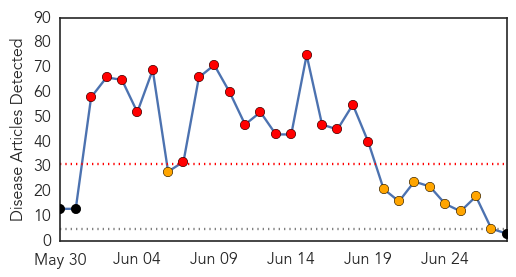
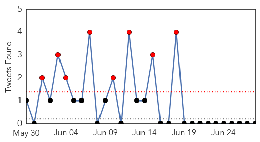
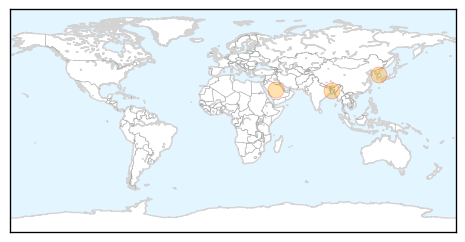
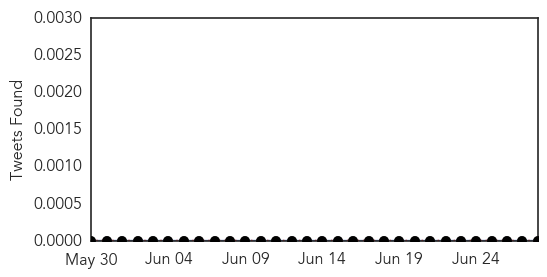
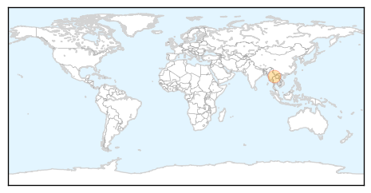

MERS
30-Day Web Trend
18 alerts, 9 warnings

30-Day Twitter Trend
14 alerts, 13 warnings

Article Locations
Article Confidences

Top Articles:
Top Tweets:
-
No tweets found for Jun 28, 2015
Hemmorhagic Fever
30-Day Web Trend
0 alerts, 0 warnings
30-Day Twitter Trend
0 alerts, 0 warnings

Article Locations
Article Confidences

Top Articles:
Top Tweets:
-
No tweets found for Jun 28, 2015